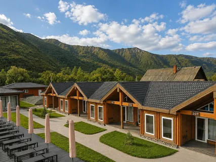
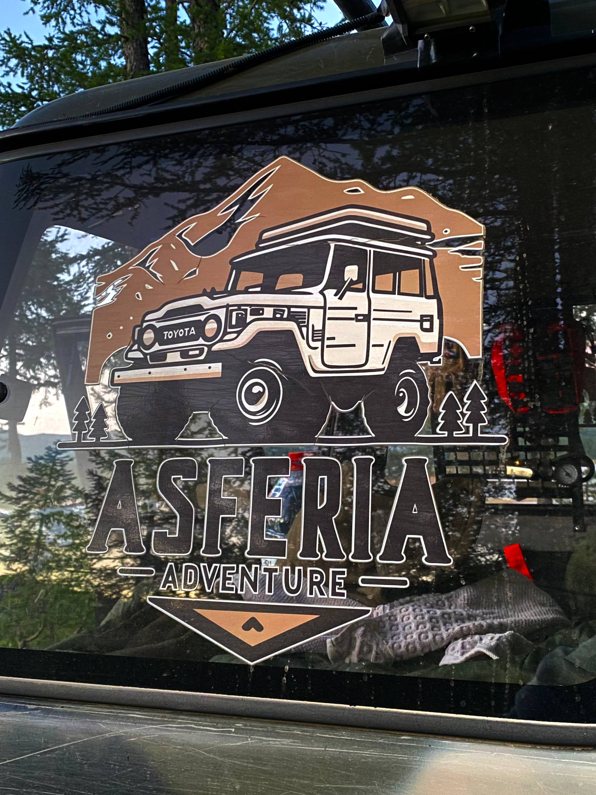

May – October
Summer
- Tailor-made journeys across East Kazakhstan
- Katon-Karagay, Lake Markakol, Lake Yazevoye
- Jeep day trips into the mountains from Ridder
- Fishing, rafting, horse riding and hiking
One local team arranges the whole trip: route, vehicles, guides, hotels, meals and permits. 4WD journeys through the Altai in summer, snowcat and snowmobile tours in winter. We meet you at Ust-Kamenogorsk airport and bring you back.
Winter dates and prices are being finalised. Write to us and we will send them as soon as they are ready.
Winter programs →Every journey is private. Tell us your dates and what matters to you — we will send a day-by-day plan and a price.
Pick-up at the airport, a drive into the Altai with photo stops, check-in at a hotel in the village.
Morning horseback ride and a maral deer farm, then a drive to the lake. Cabin on the shore and a banya.
Fishing and SUP on the lake, then the springs. Boat trip to a waterfall, optional radon baths.
A 3–4 hour hike with views of Belukha. Evening in Berel with archery and a banya.
The Old Austrian Road — about six hours of mountain track. Campfire dinner on the lake.
A morning on Lake Markakol, then down to the steppe and the clay canyons. Evening in Zaisan.
An early transfer to the airport, the border crossing or your next destination.
Mountains, lakes, forest, hot springs and desert in one journey.
We meet you at Ust-Kamenogorsk airport or railway station. After the trip we take you back there, to the border or to another city.
We book hotels and guesthouses for every night. Where there is nowhere to stay, we set up our own camp: the tents, kitchen and gear are ours.
Toyota Land Cruiser, Nissan Patrol and Tank vehicles prepared for mountain tracks. The driver is a guide who runs these routes every season; English-speaking guides are available. Up to 4 guests per vehicle.
Meals are listed in the plan for every day. Along the route we add fishing, horse riding, SUP, hikes and a banya.
We arrange national park entry and the border-zone permit. All we need from you is passport copies — send them as soon as you book.
Starlink and a Thuraya satellite phone where there is no network. If weather closes a pass, the guide has a backup route.
Need only a part of it? Hotels, transfers, guides and permits can also be arranged separately for your own plan in East Kazakhstan.
Hotels and lodges where we have stayed with guests. In wild places with nowhere to stay, we live in our own camp.



Write on WhatsApp, by e-mail or with the form below. We reply within an hour during working hours (UTC+5).
We send an itinerary with hotels, meals and a clear price, and adjust it until it fits your group.
A deposit secures your dates and the accommodation. Payment details are agreed with you individually.
We meet you and look after the journey until you leave.





Asferia Adventure is a licensed tour operator based in Ridder, East Kazakhstan. Since 2023 we have been taking guests into the Altai: to lakes, passes, waterfalls and the national parks of the region.
We arrange the whole trip: guides, prepared 4WD vehicles, accommodation with partners, airport transfers and permits. One booking, one point of contact.
On day trips lunch comes from Krem, a café in Ridder, and is included in the price.

East Kazakhstan borders Russia and China in the Altai Mountains. The gateway airport is Ust-Kamenogorsk (Oskemen, UKK), with domestic flights from Almaty and Astana. We meet you at the airport; guests arriving overland from China can be met at the Maikapchagai border crossing near Zaisan.
The summer season runs from late May to October; the high mountains are fully open from mid-June to mid-September. Winter programs — snowcat and snowmobile tours — run from December to March.
Citizens of many countries, including the EU, UK, US and China, can enter Kazakhstan visa-free for short stays — check the current rules for your passport. Katon-Karagay National Park lies in a border zone, so foreign guests need a border-zone permit. We apply for it on your behalf; allow 2–4 weeks.
Transport, guide, meals on the route and equipment for activities. Multi-day journeys include accommodation as listed in your itinerary. Everything is written out in the plan we send before you pay.
Send us your dates and group size. We reply with a day-by-day plan and a price; a deposit confirms the dates. Payment details are agreed individually, including QR payment for guests from China.
Tell us when you plan to travel and what matters to you. We reply within an hour during working hours (UTC+5) with a day-by-day plan and a price.
“Write in any messenger — I reply within an hour during working hours.”